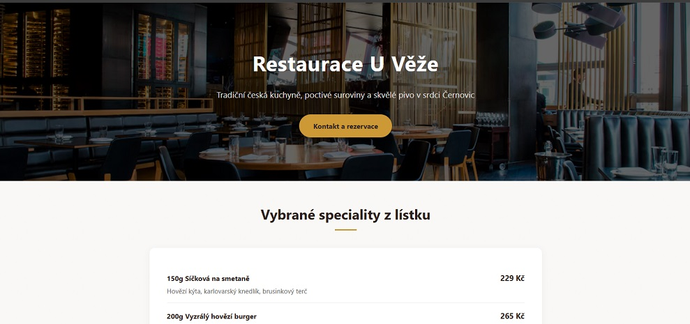
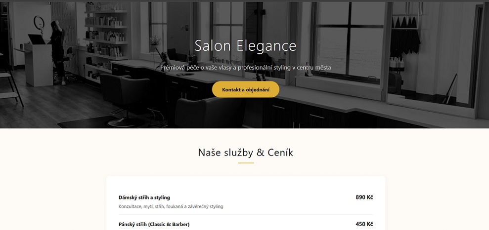
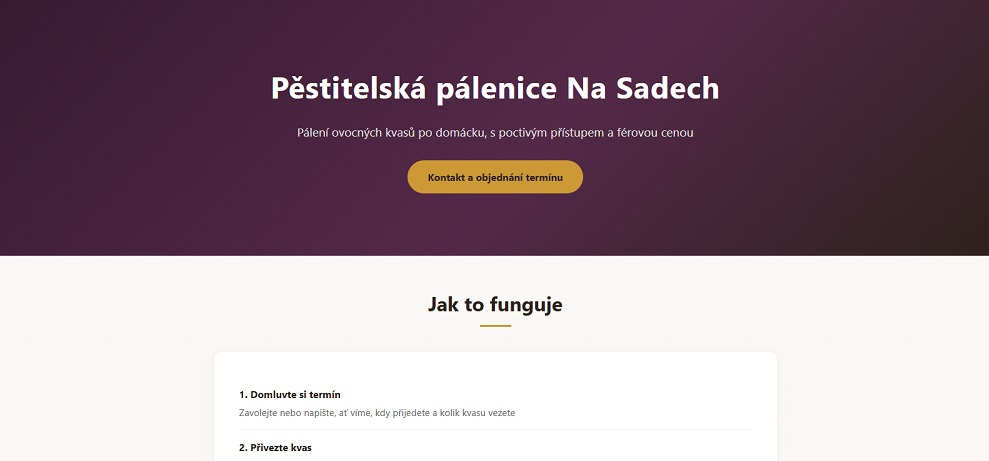

Tvořím moderní, čisté a přehledné webové stránky pro lokální podniky a projekty.

Tradiční česká kuchyně, poctivé suroviny a skvělé pivo v srdci Černovic.
Zobrazit projekt
Prémiová péče o vaše vlasy a profesionální styling v centru města.
Zobrazit projekt
Pálení ovocných kvasů, přehledný ceník a termíny pro zákazníky z okolí.
Zobrazit projektVšechny projekty jsou ukázkové návrhy. Texty, ceny a kontaktní údaje jsou smyšlené.